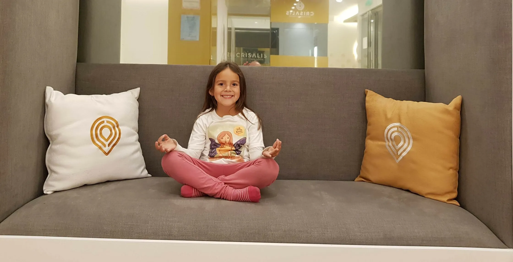

El yoga es una actividad increíblemente útil y beneficiosa para los niños, a través de la cual podemos trabajar valores de vital importancia además de reforzar su autoestima y motivación para realizar cualquier otra actividad.
También es excelente para trabajar la flexibilidad en los niños y el fortalecimiento de sus músculos, algo importantísimo tomando en cuenta que están en una constante fase de desarrollo físico.
A continuación te explicaremos los 10 beneficios más importantes del yoga infantil, que te convencerán de enseñarles esta maravillosa disciplina a los más pequeños.
1. Masaje a los órganos internos
¿Sabías que algunas posturas de yoga ayudan al tránsito intestinal? Ciertas posiciones estimulan los movimientos peristálticos, los cuales ayudan a mejorar la digestión y facilitar el tránsito intestinal puesto que presionan suavemente los intestinos.
2. Mejora la relación con el niño
El yoga es una disciplina tanto individual como grupal, cuando participas junto al niño y lo conviertes en una actividad en común, esto ayuda a que el pequeño se sienta más cómodo compartiendo contigo.
3. Desarrolla su concentración y paciencia
Puesto que el yoga amerita cierto nivel de concentración para realizar correctamente cada postura, además de ser sumamente relajante y meditativa, estimula al niño a prestar mayor atención para conseguir realizar las posturas, de esta forma su concentración crece al igual que su paciencia, lo que se resume en un beneficio inmenso a largo plazo.
4. Ayuda a reconocer mejor las emociones
Para los niños suele ser difícil reconocer las emociones puesto que todo es nuevo para ellos, es por eso que el yoga representa un canal útil y efectivo para ayudar a que los pequeños a través de la meditación, puedan reconocer cuando se sienten enojados, tristes o tienen miedo, además de aportar un alivio y una forma de enfrentar a todas esas emociones que llevamos dentro de nosotros.
5. Baja el estrés infantil
Estrés infantil es un concepto que puede parecer extraño, sin embargo es más común de lo que sospechamos, puesto que los pequeños al igual que los adultos, deben lidiar con situaciones diarias que desde su punto de vista son estresantes y que pueden incidir terriblemente en los niños. El yoga ayuda a que los pequeños se desprendan de sus tensiones, haciéndolos sentir en calma y seguros.
6. Suaviza el carácter
El yoga es una disciplina que se centra en equilibrar nuestro cuerpo, mente y espíritu, también nos enseña a mirar el mundo y el universo con ojos amables, pues cuando estamos en contacto con nuestro interior, dejamos ir la rabia y el miedo, lo que automáticamente nos permite ser mejor y más amables con quienes nos rodean.
7. Ayuda a regular su función fisiológica
El yoga además de estimular a los órganos para que estos realicen mejor todas sus funciones, también ayuda a mejorar el metabolismo de nuestro cuerpo a través de la liberaciones de distintas hormonas tales como la Endorfina, la Serotonina y la Dopamina, que nos hacen sentir felices, alivian el estado de ánimo y nos llenan de motivación.
8. Estimula la circulación sanguínea
Ideal para ayudar al corazón a mantenerse fuerte y sano, sin importan si se trata de adultos o niños, algunas posturas de yoga ayuda a que la sangre llegue de mejor forma a todos los lugares llevando consigo oxigeno que mantiene nuestros músculos despiertos y funcionando.
9. Desarrolla los músculos motores
Al ser una actividad de bajo impacto, el yoga no compromete la integridad individual por lo que es ideal para los niños. Hace uso de distintos músculos que se soportan entre sí para lograr realizar las posturas que se desea y es esta conexión entre nuestro cuerpo y nuestra mente la que ayuda a que los músculos motores se desarrollen más conscientemente y mejoren su funcionamiento.
10. Canaliza la energía física
Los niños están siempre llenos de energía corriendo de un lugar a otro, realizando tantas actividades a la vez que en ocasiones nos preguntamos ¿De dónde sacan toda esa energía? En esta situación el yoga representa una herramienta que nos ayudará a canalizar la enorme energía que los pequeños para que ellos aprendan a enfocarla de mejor manera.